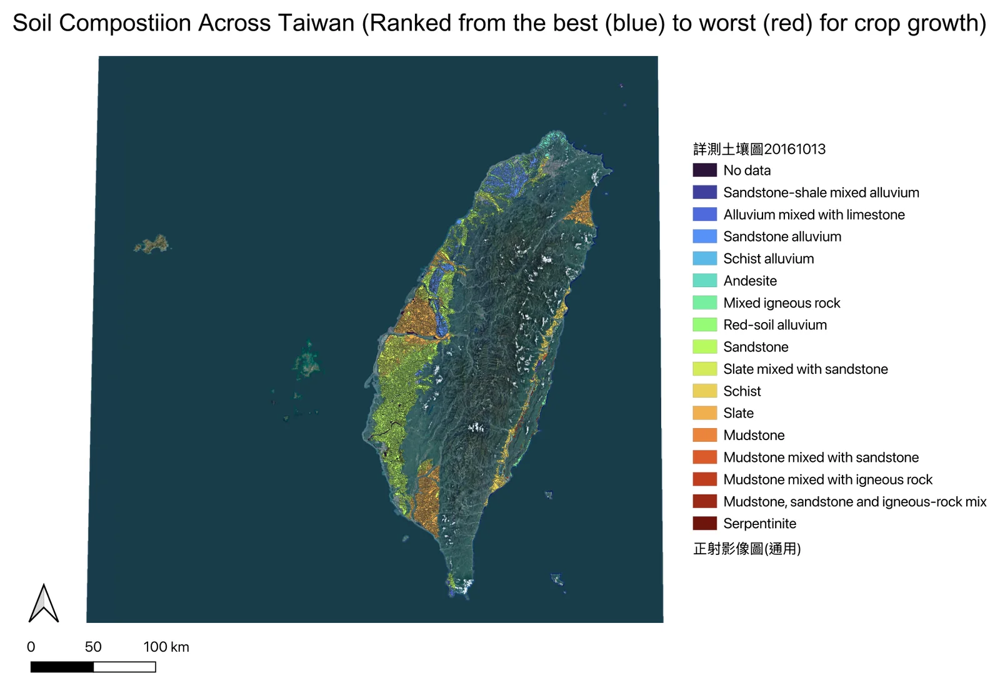
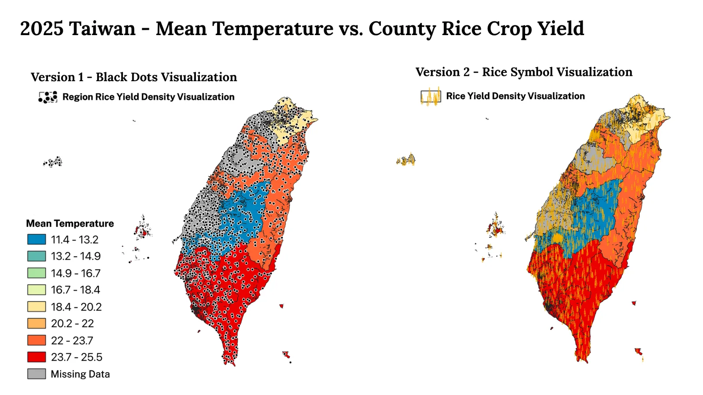
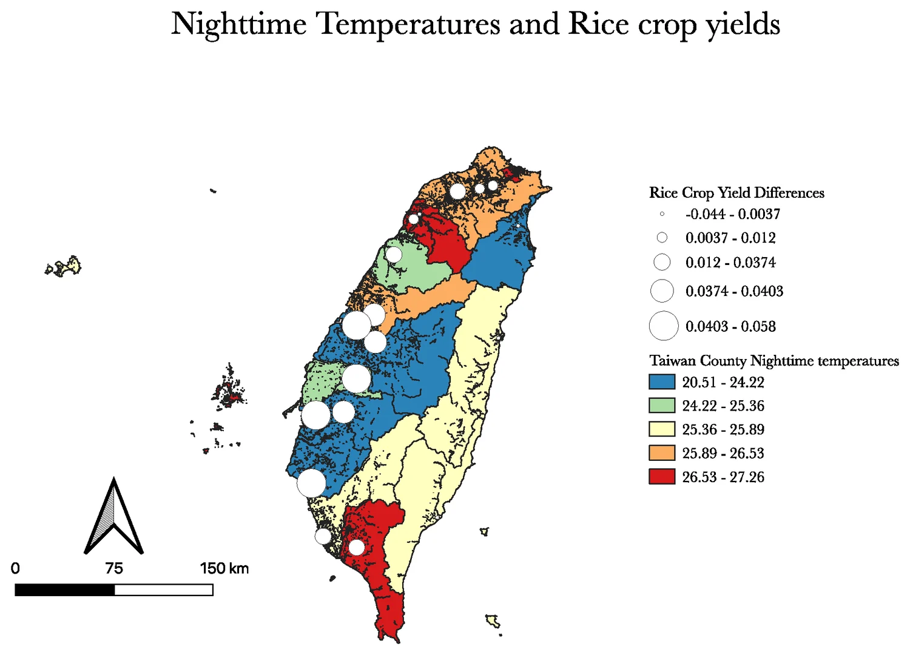
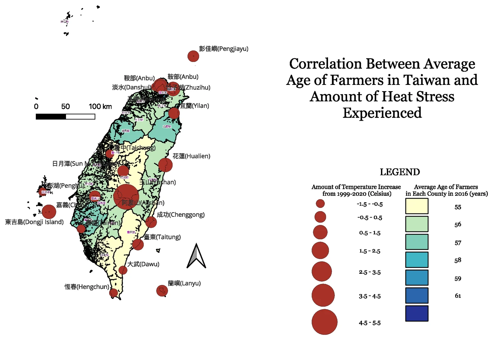
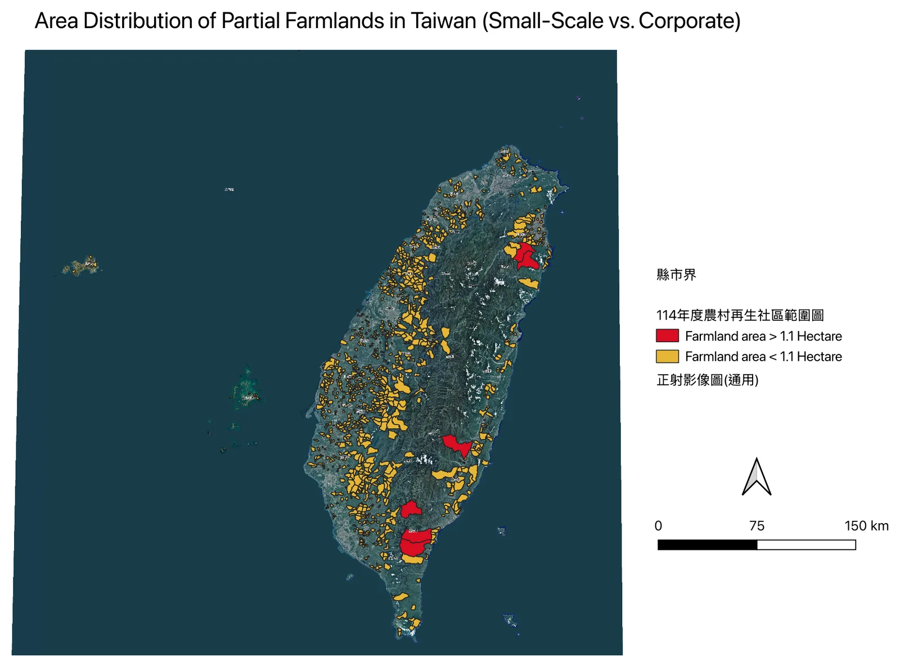
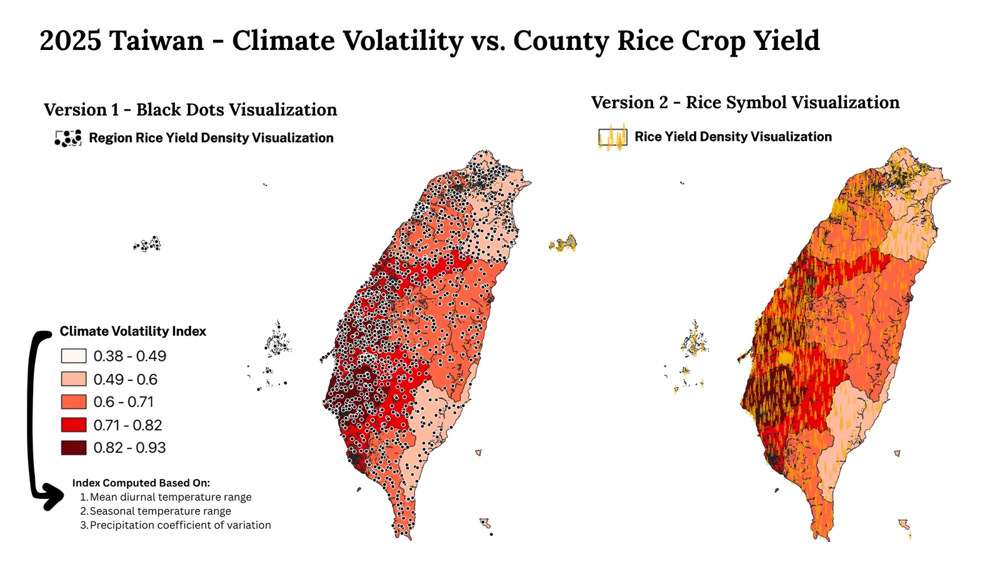
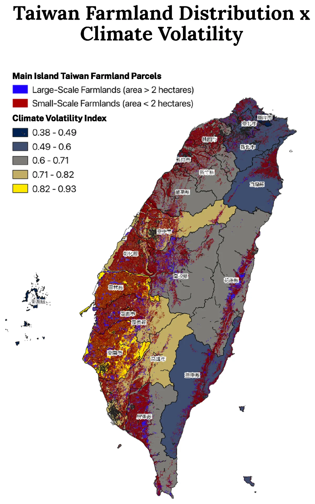
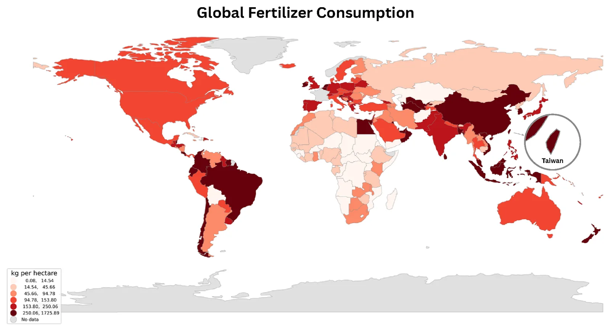

The question these maps answer
A map that does not change a decision is decoration, so here is the decision. ReLeaf is a field-deployed bioreactor: engineered Bacillus subtilis that senses stress in the soil and releases a protectant in response. It is not a product you ship everywhere at once. Somebody has to say where it goes first, and that choice only makes sense if three things overlap on the same piece of ground — the stress is real there, the crop is vulnerable to that particular stress, and the farm is one that cannot absorb a bad season.
Everything below is an attempt to find that overlap and to be honest about where we could not. The maps are grouped so that each one answers a question the previous one raised: how much variation is there, how fast is it moving, which part of it does the crop actually feel, and who is left holding the consequences.
An island with two climates
Taiwan is barely 400 kilometres long and holds both a tropical and a subtropical climate. A drive from Kaohsiung to Jade Mountain (Yushan) takes about three hours and crosses roughly 19 °C of annual mean temperature — a gap comparable to the one between Miami and Anchorage, on opposite corners of a continent. Most countries' climates shift gradually across vast distances. Taiwan's shifts by double digits within an afternoon's drive, because the island is not flat: it stands over 1,000 metres up along its spine, compressing more climate variation into less horizontal distance than almost anywhere on Earth.

That compression is why agriculture here was never one tradition. Ms. Chen, who
runs a natural farm in north-west Taiwan and has done for twenty-five years, put
the point more precisely than any dataset could: Even the world's top soil
microbiology PhD doesn't fully understand soil… Earth has about 12 soil
classification types, and Taiwan alone has 11 of them.
Rather than a single
broad practice, Taiwanese agricultural expertise evolved into thousands of
local, inherited, hyper-specific ones, each tuned to a single slope or valley.
No two plots of land are the same,
she told us. A plot with a tree next
to it and one without are different.
This is the first thing the geography does to the problem. Knowledge that is calibrated to one valley does not transfer to the next one, so a farmer facing a new stress cannot borrow the answer from a neighbour twenty kilometres away. Precision is what made the knowledge extraordinary. It is also what makes it brittle.
The warming, and the speed of it
For nearly a century, Taiwan's average temperature crept upward by about 0.11 °C per decade — slow enough that a farmer could spend an entire working life barely noticing it. Since 1991 that rate has nearly tripled, to 0.29 °C per decade. 2024 was the hottest year Taiwan has recorded, and Taipei alone logged 63 days above 35 °C, nearly twenty more such days than the historical norm.
Heat is not the only thing moving. Between the 1991 and 2021 station records, monthly sunshine duration in Taipei rose from 78.5 to 101.3 hours, and in the mountain agricultural zone around Alishan from 152.5 to 196.7 hours in the critical high-stress months — extra solar load on exactly the high-mountain tea and vegetable crops least able to move uphill away from it. Rainfall is compressing at the same time: fewer rainy days per year, with the intensity of what falls on the remaining days up by close to 30%. For a farm that depends on steady replenishment rather than flood, the same annual total delivered in fewer, harder bursts is a loss, not a wash — it overwhelms the soil's absorption capacity and leaves as runoff.

The rice belt is not spread evenly across the temperature range. Where the surface has values, the dots sit in the warm end of it — which is what makes the warming rate a crop problem rather than a weather fact. Whether the crop has already responded is a separate question, and the historical animation is where we tried to look at it directly.
Read it carefully and it is suggestive, not conclusive. Warming is close to island-wide by the end of the run; the rice-area change is not, and the counties that lose the most area are not simply the counties that warmed the most. Land use responds to prices, labour, water allocation and policy as well as to temperature. We have not separated those, and this page does not claim to.
The stress you cannot see
The most damaging part of the warming is not the part anyone can see. In a landmark 24-year field study at the International Rice Research Institute in Manila, with collaborators at UC Davis and in Guangzhou and Wuhan, annual mean maximum and minimum temperatures rose by 0.35 °C and 1.13 °C respectively over 1979–2003 — the nights warming more than three times as fast as the days. And it was the nights that mattered: grain yield fell about 10% for each 1 °C rise in minimum temperature, while the effect of maximum temperature was statistically insignificant.[1]
The mechanism is almost cruel in its subtlety. During the day rice photosynthesises and stores sugar. At night it is supposed to rest, conserving what it built. Warmer nights keep respiration running in the dark, burning through those reserves before they can become grain. The plant looks completely healthy at sunrise while quietly spending the harvest it was building the day before. A farmer standing in that field at dawn sees nothing wrong, because there is nothing to see.

Where this stops being a foreign study and starts being a Taiwanese problem is the threshold. Experimental work puts damaging night-time temperatures for grain-setting in the 25–33 °C band. Kaohsiung's July nights already average 26.7 °C. The heart of Taiwan's rice belt is inside that band every summer, now, without any further warming at all.
Who is standing in the field
Stress only becomes damage when it meets someone who cannot absorb it. In Taiwan, more than 80% of farmers work small-scale farms, yet those holdings together account for less than 9% of agricultural land, with most farm households working an average of about 0.9 to 1.1 hectares. The average Taiwanese farmer is 63.5 years old and more than half are over 65. Early, accurate response to crop stress has always depended on somebody who can walk a field and read it — and that is the skill ageing out fastest.


Ms. Chen's drought method is a good illustration of what a small farm's
resilience is actually made of. Before the rains come she lays dried weeds
across the soil, so that when morning dew settles the weeds catch it and let it
soak in slowly. Then in the morning, those weeds become something that
captures moisture — dew collects on them in the morning, and that water can
then soak into the ground.
The soil treated this way could carry her plants
for about three weeks before she had to check again. That three-week window was
not guesswork. It was a clock built from decades of reading one specific plot.
A 2022 global study by researchers at the University of Texas at Austin, Hong Kong Polytechnic University and Texas Tech found that flash droughts — soil moisture collapsing within days — are not necessarily becoming more frequent, but they are arriving faster, with nearly half now developing inside a single five-day window rather than unfolding over weeks.[2] A rhythm as exact as three weeks does not leave much margin. It does not have to break; it only has to quietly become a two-week clock, and by the time she walks out on schedule the plants are already gone. Her method has not changed. The land does not look any different. The gap was never in what farmers know.
Volatility against the farms that carry it
A mean temperature is a poor description of what a plant experiences. What breaks a growing calendar is variability — how far the day swings from the night, how far the season swings from the last one, how unevenly the rain arrives. So we built a single climate volatility index from three components: mean diurnal temperature range, seasonal temperature range, and the coefficient of variation of precipitation. It is rescaled to run from 0.38 to 0.93 across Taiwan.

This is the overlap the project was looking for, and it is worth being precise about what it is. The volatility band and the rice belt coincide over the western plain. That is a spatial coincidence, established by putting two layers in the same projection and looking — not a causal claim, and not a correlation we have quantified. What it does justify is the next map, which asks the version of the question that actually matters: is the volatility falling on large farms or small ones?

That is the finding this page exists to state. The parts of Taiwan with the most unstable climate are the parts farmed in the smallest units, by the oldest farmers, growing the crop most exposed to warm nights. There is no region where the stress lands on the operations best equipped to absorb it.
Fertilizer, and the distance it travels
The standing answer to stressed soil in Taiwan is more input. Taiwan is about 36,200 square kilometres and applies over 300 kilograms of fertilizer per hectare; the United States, at 9.83 million square kilometres, applies roughly 128. Part of that gap is spatial: only about a quarter of Taiwan's land is viable for agriculture, against roughly two-fifths in the US, so the same national demand is pressed onto far less ground. Fertilizer has held yields up. Applied at this intensity it also loads the soil biology that ReLeaf depends on.

Domestically the trend is downward. Total fertilizer supplied fell from about 1.11 million tonnes in 2012 to roughly 0.79 million in 2025, and nutrient intensity with it. That is real progress, and it is also the reason a sensing-and-dosing system is worth building: the direction of travel is already towards applying less, and the thing standing in the way is knowing when and where less is safe.
| Year | Applied (t, product weight) | Nutrient intensity (kg N+P+K/ha) | N (t) | P (t) | K (t) | Value (NT$ m) |
|---|---|---|---|---|---|---|
| 2011 | 1,105,732 | 581 | 179,562 | 63,968 | 98,531 | 11,666 |
| 2012 | 1,111,123 | 589 | 182,412 | 65,039 | 99,587 | 12,737 |
| 2013 | 1,048,134 | 591 | 177,578 | 66,558 | 104,124 | 11,382 |
| 2014 | 1,075,700 | † | † | † | † | 9,670 |
| 2015 | 1,001,517 | 555 | 169,206 | 62,654 | 95,175 | 10,165 |
| 2016 | 1,009,286 | 571 | 171,896 | 65,210 | 99,078 | 9,024 |
| 2017 | 939,829 | 531 | 161,988 | 60,233 | 90,311 | 8,840 |
| 2018 | 955,406 | 530 | 159,478 | 59,737 | 92,879 | 8,238 |
| 2019 | 878,520 | † | † | 55,952 | 87,952 | 7,969 |
| 2020 | 926,444 | 531 | 158,339 | 58,825 | 95,728 | 8,330 |
| 2021 | 839,365 | 474 | 142,818 | 52,337 | 84,171 | 7,480 |
| 2022 | 818,736 | 463 | 138,476 | 52,385 | 82,018 | 7,854 |
| 2023 | 772,084 | 441 | 131,310 | 50,095 | 78,528 | 7,581 |
| 2024 | 800,434 | 453 | 134,365 | 51,101 | 81,393 | 7,597 |
| 2025 | 792,963 | 449 | 133,041 | 50,742 | 80,586 | 7,994 |
† Nutrient breakdowns are missing for 2014 and partly for 2019 in the source series; we have left the gaps rather than interpolating them. Note also that the intensity column here and the 300 kg/ha figure in the paragraph above are not the same measure — they use different denominators, from different publishers. Compare each series with itself, not across the two.
Getting it there
Intensity is one half of the input question. Distance is the other. If a treatment has to be manufactured centrally and driven to the field, then the farms furthest from a plant pay the most for it, in money and in delay — and those are disproportionately the small holdings this page has been about. So we built the road network out: every one of Taiwan's 2,792,536 farmland parcels from the official parcel map, aggregated by centroid into 346 township-level demand nodes covering 743,529 hectares, and 616 registered fertilizer and agrochemical companies, routed against each other on the real road network via OSRM.
Routing is scoped to the company's own county in both modes: a Changhua company never links to Yilan farmland even when a Yilan node happens to be closer as the crow flies, because that is not a route anybody would actually drive.
The routing tool loads about 13 MB of county farmland rasters and then calls a live routing server, so it waits for you to ask.
What is real here: every parcel centroid computed from its own polygon, the point-in-polygon township join against official Ministry of the Interior boundaries, the area-weighted aggregation, and every distance and duration, which come from live road-network routing rather than straight lines. What is not: the NT$/km freight rate, the kg CO₂/tonne-km emission factor and the truck payload. We found no sourced Taiwanese figure for any of the three, so they are exposed as editable input boxes in the panel instead of being presented as fact. Anything the tool reports in dollars or carbon is only as good as the number you type in.
What the forecast adds
Everything above is observation. The last layer is projection, and it is included with the lightest possible claim attached: it sets the direction, not the magnitude, and it is global rather than Taiwanese.
The honest summary of this section: the local record shows warming that has tripled its rate, night temperatures already inside the damaging band for rice, and a volatility band sitting on top of the smallest farms. The global projections point the same way. They are not what the argument rests on.
Method
Everything was assembled in QGIS (3.44 LTR, with some earlier layers built in 3.44.11 “Solothurn”), with the routing tool built separately as a Leaflet application over the same aggregated data.
Projection and geometry
- Parcel geometry and the county rasters are handled in EPSG:3826 (TWD97 / TM2 zone 121), the national grid, so that area and distance are computed in metres rather than degrees. The
.pgwworld files shipped alongside each county raster carry that reference. - Web delivery — the routing map and its overlays — is reprojected to EPSG:3857, which is what a slippy map requires.
- Township assignment is a point-in-polygon join of each parcel centroid against the official Ministry of the Interior township boundaries. Centroids are computed per polygon, not sampled.
Aggregation
- 2,792,536 parcels reduce to 346 township demand nodes. No sampling: every parcel from every county shapefile is included.
- Each node's position is the area-weighted centroid of its township's parcels, so a township whose farmland sits in one corner gets a node in that corner rather than at the administrative centre.
- Total aggregated farmland comes to 743,529 hectares, which is in the right range for Taiwan's arable area — the sanity check that the pipeline held at national scale and not only on the Taichung pilot.
The climate volatility index
- Three components: mean diurnal temperature range, seasonal temperature range, and the precipitation coefficient of variation — the standard bioclimatic descriptors of within-year instability.
- Each is normalised and combined into a single index, rescaled across Taiwan to a 0.38–0.93 range and classified into five quantile bands for display.
- to document The exact weighting between the three components and the source climate surface they were derived from need writing up here before this page goes to Final.
Routing
- Distances and durations come from OSRM against the OpenStreetMap road network, requested live and throttled; the full national run is roughly 613 calls and takes a couple of minutes.
- Candidate farmland nodes are filtered to the company's own county before the nearest is chosen. Where a company's own township has no farmland record, the fallback searches only within that county — there is no cross-county path in the code.
- Cost and emissions are computed client-side from the three editable assumptions, so changing a box re-derives every figure on screen without another routing call.
Data sources
| Layer | Publisher | Resolution | Year | Used in |
|---|---|---|---|---|
| Monthly mean temperature, sunshine duration, precipitation | Taiwan Central Weather Administration | Station | 1991–2020 normals | Fig. 2, 3, 4, 5 |
| 農田坵塊圖 — farmland parcel map | Ministry of Agriculture (COA) | Parcel | edition | Fig. 8, 10 |
| 詳測土壤圖 — detailed soil survey | Ministry of Agriculture | Polygon | 2016-10-13 edition | Fig. 1 |
| Township and county administrative boundaries | Ministry of the Interior | Township | edition | All Taiwan maps |
| 114年度農村再生社區範圍圖 — rural regeneration community boundaries | Ministry of Agriculture | Community | 2025 (ROC 114) | Fig. 6, hero |
| Persons engaged in on-farm agricultural and livestock activities, by sex and age | Ministry of Agriculture, via data.gov.tw dataset 80661 | County | Updated 3 Sep 2024 | Fig. 5 |
| County rice yield and planted area | Ministry of Agriculture agricultural statistics | County | 2005–2025 | Fig. 2, 4, 7, 12 |
| Fertilizer supply and nutrient tonnage | Ministry of Agriculture | National | 2011–2025 | Fertilizer table |
| Fertilizer consumption per hectare, by country | publisher | Country | year | Fig. 9 |
| Bioclimatic surfaces behind the volatility index | publisher | resolution | year | Fig. 7, 8 |
| Registered fertilizer and agrochemical company locations | publisher | Address point | year | Fig. 10 |
| ISIMIP2b agriculture sector simulation data v1.1 | Müller, Elliott, Folberth, Jägermeyr, Khabarov, Seneviratne, Thiery & Frieler, ISIMIP Repository | 0.5° global grid | 2024 | Fig. 11 |
| Road network for routing | OpenStreetMap contributors, served via OSRM | Road segment | Live | Fig. 10 |
Licences are the outstanding gap in this table. Every Taiwanese government layer above was obtained through the open data portals, but the specific licence and edition for each needs recording before the page is final, and the three publisher rows need tracing back to whoever built them.
Limits
- Coincidence is not correlation. Figures 2, 4, 7 and 8 put two layers in one projection and invite you to look. No regression was fitted, no significance was tested, and no confounder was controlled. Where the text says two things sit on the same ground, that is exactly and only what it means.
- The ecological fallacy is live here. County means — farmer age, night temperature, yield — do not describe any individual farm inside that county, and the whole argument of this page is that Taiwanese conditions vary at the scale of a slope. A county-level map is the wrong instrument for a hyper-local problem; it is the instrument the published data allows.
- The 2025 temperature surface has holes in it. Several north-western counties come out grey in Figure 2 — no interpolated value — and they are not empty counties, they are part of the rice belt. Until that gap is filled, Figure 2 orients a reader and nothing more, and the volatility surface in Figure 7 is the better of the two to reason from.
- Records do not overlap cleanly. The station warming series runs from 1980; the rice-area series begins in 2005. Figure 3 shows fifteen years of one against nothing of the other, and no trend should be read across that gap.
- The night-temperature relationship is borrowed. The 10%-per-degree figure is from Philippine field data, not Taiwanese. We use it to argue that Kaohsiung's 26.7 °C July nights sit inside a known damaging band. We have not reproduced the yield relationship on Taiwanese data, and until we do, the projected Taiwanese cost of a warming night is an inference and not a measurement.
- Coverage is incomplete. The routing package covers 19 counties; the outlying islands of Kinmen, Penghu and Lienchiang were not in the upload, so three registered companies there have no in-county farmland to route to. Figure 6 covers designated rural regeneration communities, not all farmland.
- The cost and carbon figures are assumptions. Freight rate, emission factor and payload are unsourced defaults, editable in the tool. They should not be quoted from this page as findings.
- The routing tool breaks the wiki's own hosting rule. It fetches Leaflet from a CDN, basemap tiles from OpenStreetMap and routes from OSRM, all outside iGEM. Before the wiki freeze it needs the library vendored, the routes precomputed and cached, and the basemap either self-hosted or dropped — or the tool has to become a static figure.
Reproducing this
The aggregated data behind Figures 8 and 10 ships with this page, so the township-level result can be checked without re-running the parcel pipeline:
- all_farmland_nodes.csv and .geojson — all 346 township nodes with county, township, hectares, parcel count and weighted centroid.
- county_meta.json — per-county raster bounds, parcel counts and total area.
raster_<code>.pngwith matching.pgwworld files, one pair per county, in the routing directory. Drag a matching pair into QGIS and you get the parcel layer georeferenced in EPSG:3826.- METHODS.md — the packaging notes for the routing build, including the county-to-letter code mapping.
to do The QGIS project files, the styling
.qml files and the scripts that built the volatility index are not
published yet. They need to go to the iGEM-hosted repository before the freeze,
or nothing on this page can be independently checked beyond the node table.
References
- Peng S, Huang J, Sheehy JE, Laza RC, Visperas RM, Zhong X, Centeno GS, Khush GS, Cassman KG. Rice yields decline with higher night temperature from global warming. PNAS 2004;101(27):9971–9975. doi:10.1073/pnas.0403720101
- Flash drought onset speed, 2022. Study by researchers at the University of Texas at Austin, the Hong Kong Polytechnic University and Texas Tech University. full citation Authors, title, journal and DOI still to be recorded.
- Taiwan Central Weather Administration. Monthly mean temperature in Taiwan, 1991–2020. cwa.gov.tw, January 2021. Mapped using QGIS.
- Müller C, Elliott JW, Folberth C, Jägermeyr J, Khabarov N, Seneviratne S, Thiery W, Frieler K. ISIMIP2b simulation data from the agriculture sector (v1.1). ISIMIP Repository, 2024. doi:10.48364/ISIMIP.682003.1
- Taiwan Ministry of Agriculture. Number of persons engaged in on-farm agricultural and livestock activities in agricultural and livestock households, by sex and age. data.gov.tw/dataset/80661, last updated 3 September 2024. Mapped using QGIS 3.44 LTR.
- Interview with Ms. Chen, natural farm operator, north-west Taiwan, 2026. Full record on the Integrated Human Practices page.